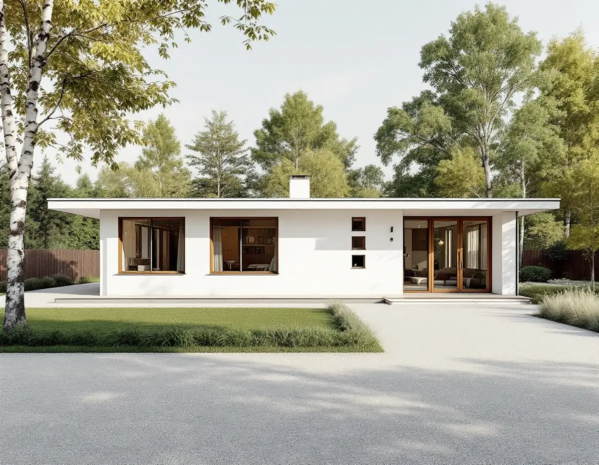
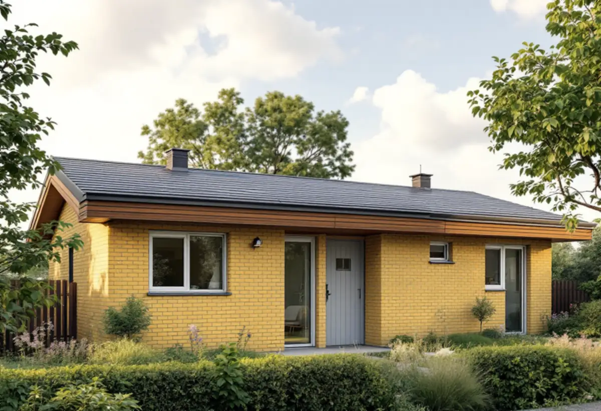

Besök och dokumentation
Vi fotograferar och mäter takfot, vindskivor och takband innan något rörs.
I Täby skiljer sig plåtarbetet mycket mellan husen: tegel eller plåt på de äldre villorna vid Roslagsbanan, smala vindskivor på funkisvillorna i Näsbypark och platta tak med takband i grupphusområdena. Geal Entreprenad AB har egna plåtslagare som arbetar i hela Täby, med gratis platsbesök och skriftligt kostnadsförslag.

Kommunens kunskapsunderlag Kulturmiljöer i Täby beskriver den äldre villabebyggelsen vid Roslagsbanans stationer, bland annat längs Sågtorpsvägen i Roslags-Näsby där flera av Täbys äldsta villor ligger. Husen har sadeltak eller brutna tak, ibland utkragande nedtill, och taken är oftast täckta med tegelpannor eller plåt.
Ett brutet tak har en knäck där takfallet byter lutning, och ett utkragat nedre takfall kräver att fotplåten följer svängen. Båda ställena är svåra att få täta med standarddetaljer. Där plåten ligger på hela taket är det falsarna, skarvarna mot skorstenen och övergången vid knäcken som brukar släppa först.
Kommunens generella riktlinjer för småhusområden säger att befintliga takformer, takmaterial och takfotens utformning bör behållas på befintliga hus. Riktlinjerna är inte juridiskt bindande men används som vägledning i kommunens arbete.

I samma underlag lyfter kommunen fram flera villor i Näsbypark. En funkisvilla från 1940 har låga takfall som inte syns från gatan, och en villa från 1946 beskrivs med ett tak som ger ett lätt intryck och smala vindskivor. En villa från 1939 har en kopparbaldakin över entrén.
Det är just den sortens detaljer som försvinner om takkanten görs om med grövre plåt. En vindskiva som är några centimeter högre, eller en fotplåt med annan bockning, ändrar hur hela huset uppfattas. Vi mäter därför upp profilerna innan något tas bort och bockar ny plåt efter dem.
På de låga taken är det dessutom tätheten som avgör. Vatten rinner långsamt och skarvar, genomföringar och anslutningar mot vägg måste vara utförda för låg lutning. Mer om det under takrenovering i Täby.
Underlaget visar två hus från 1968 där envåningshusen ofta har platt tak med brett träpanelat takband, och parhusen i Erikslund som har enkla, raka former utan takfot – bara en bockad plåt vid övergången mellan tak och vägg. Om en villa från 1959 skriver kommunen att takfot och stuprännor är integrerade i byggnaden.
På sådana hus är plåten inte en detalj utan själva gränsen mellan tak och fasad. Byts den mot en standardprofil ändras hela gatubilden, och på ett platt tak leder en felaktig avslutning vatten in i takbandet. Därför börjar vi med att dokumentera den befintliga plåten.
I ett grupphusområde är det dessutom praktiskt om flera grannar gör plåtarbetet samtidigt. Då blir kulör och profil lika på hela längan. Söker du oss för lokala takarbeten finns mer under takläggare i Täby.
Täby kommun skriver att det inte behövs bygglov för fasadändringar på en- och tvåbostadshus om byggnaden inte är särskilt värdefull, inte ligger i ett särskilt värdefullt område och inte har utökad lovplikt i detaljplanen. Är du osäker ber kommunen dig kontakta den för rådgivning.
Plåt används också på fasader i Täby. I underlaget nämns punkthusen i kvarteret Höstfibblan, som ursprungligen hade putsade fasader men som har tilläggsisolerats och fått ljust gula plåtfasader. Enligt Boverket räknas ett byte till annat fasadmaterial som fasadändring, medan byte mot samma material och utförande är underhåll.
Kommunen råder också den som ska förändra ett hus att ta fram äldre ritningar, eftersom många hus har byggts till. Ritningarna visar ofta hur takfot och plåtdetaljer var tänkta från början.
Vi fotograferar och mäter takfot, vindskivor och takband innan något rörs.
Kommunens riktlinjer och detaljplanen kontrolleras inför val av material.
Tak, takfot, avvattning och bleck redovisas var för sig.
Ny plåt bockas efter de profiler som finns på huset.
Anslutningar mot vägg och genomföringar görs för takets lutning.
Vi provar avvattningen och går igenom arbetet med dig.
Enligt Skatteverket ger det rotavdrag att reparera eller byta plåttak, hängrännor och stuprör och att byta och reparera fönsterbleck på ett småhus. Avdraget är högst 30 procent av arbetskostnaden och högst 50 000 kr per person och år, och rot och rut får tillsammans uppgå till 75 000 kr.
Material och resor ingår inte. Avdraget dras direkt på fakturan.
Om plåten kan bockas av standardplåt eller måste tillverkas efter förlaga, hur lång takfoten och takbandet är, antalet genomföringar och om flera hus i samma länga görs samtidigt. Efter ett gratis platsbesök får du ett skriftligt kostnadsförslag.
Plåttak, hängrännor och beslag.
Plåtslagare i Stockholm →Takbyte, takbesiktning och plåtarbeten.
Takläggare i Täby →Näsbypark, Viggbyholm och Gribbylund.
Takrenovering i Täby →Detaljplan, Q-märkning och VA-inkoppling.
Attefallshus i Täby →Kulör per kvarter och provytor.
Fasadmålning i Täby →Villastäder och grupphus i Täby.
Fönsterbyte i Täby →Gårdarnas fönster, kulör och spröjs.
Fönsterrenovering i Täby →Laga och slipa golvet efter en riven vägg.
Golvslipning i Täby →Radhuslängor, villor och nya gästhus.
Badrumsrenovering i Täby →Tillbyggnad, gästhus och renovering.
Byggföretag i Täby →Tegelvillor, kedjehus och grupphus i Täby.
Fasadrenovering i Täby →Villor, radhus och kedjehus från 1970- och 80-talen.
Golvläggare i Täby →Grupphus, radhus och villor vid banan.
Köksrenovering i Täby →Trävillor, puts och kedjehus i Täby.
Målare i Täby →Verandor, fönster och carport.
Snickare i Täby →Betongpannor, kedjehus och tegelvillor.
Takbyte i Täby →Ny tapet mot lister och foder.
Tapetsering i Täby →Byle, kyrkbyn och detaljplanen.
Tillbyggnad i Täby →Ett hus som går att bo kvar i.
Totalrenovering i Täby →